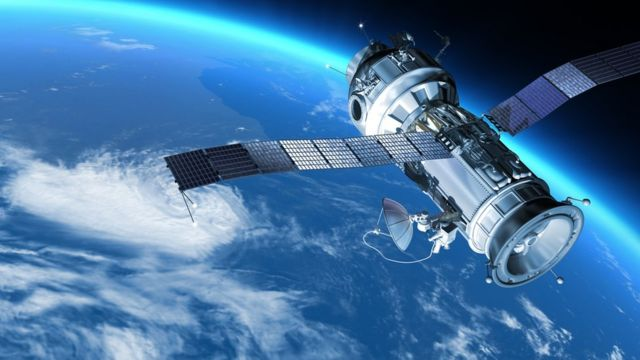
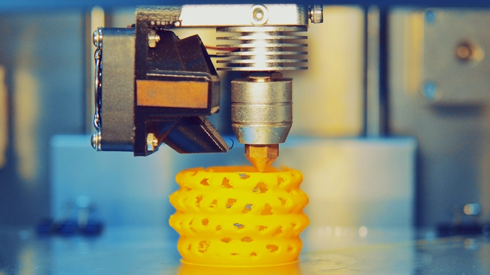
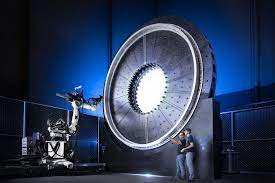
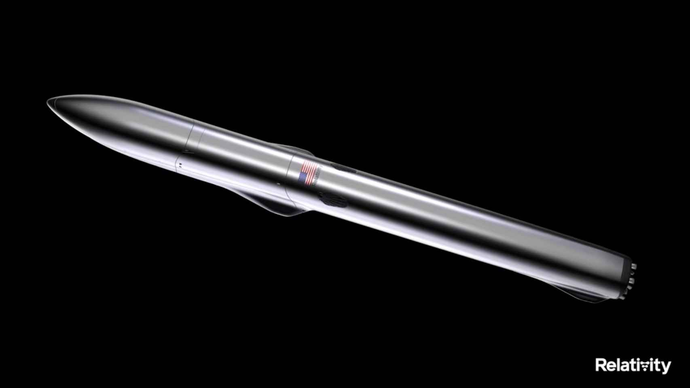

In the last few years, 3D printing has brought us numerous innovations, facilitating numerous jobs and allowing us to
do things that were not possible before. 3D printing has expanded the boundaries of what is possible when creating
pieces, or even entire spaceships and satellites.

A satellite is an artificial body placed in orbit around any planet to gather
information such as imagery or communication.
A spaceship is a vehicle designed to fly in outer space. These
have several uses: planet observation, human transportation through space…

Three-dimensional (3D) printing is an additive manufacturing process in which a physical
object is created from a digital design by printing thin layers of material
and then fusing them together.
INDEPTH 3D PRINTING EXPLANATION
3D Printing is a method of production that uses plastic and heavy metals to solve problems.
First, the model is created using special software to design the tridimensional figure.
Then, the design is exported in a specific format, and the file is processed thanks to a computer. This computer
is connected to the 3D printer, which creates the piece layer by layer. This technology can be used in various fields,
such as the automotive industry (rearview mirror cover), the medical field (prostheses), or consumer products (packaging).
In this specific field, 3D printing is used to facilitate the construction of hardware and other devices assembled for the final
product. Specifically, for aeronautics, Stargate is the usual 3D Printer. It is an industrial-size printer that has evolved
throughout four generations, having radical improvements with each new version.

Stargate
Stargate's fourth generation is the one currently used to print the Terran 1 and Terran R rocket. It has been revolutionary
in its way of printing, as it has introduced horizontal printing, which, combined with the new components of the Stargate,
has become seven times quicker than the previous one.
The first spaceship, 85% 3D printed, the Terran 1, took off successfully in March 2023. It could have a flight
time of 3 minutes, but without reaching orbit. The initial attempt was on the 8th of March but failed because of the
propeller's temperature. The second attempt was on the 11th of March but failed again because of the fuel pressure. Lastly,
the third attempt took place on the 23rd of March, being able to take off. This was a significant step
in the field of aerospacial 3D Printing.

A traditional spaceship can cost between 60 and 200 million USD. This company has promised to decrease this price considerably.
It has managed to gather 1300 million USD before being launched. Finally, the Terran 1 has cost approximately 12 million USD,
lowering reasonably the overall price of its construction.
DIFFERENCES BETWEEN NORMAL AND AEROSPACIAL 3D PRINTERS